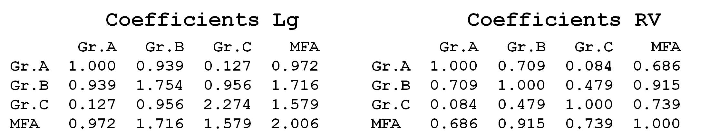
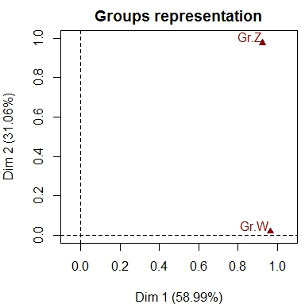
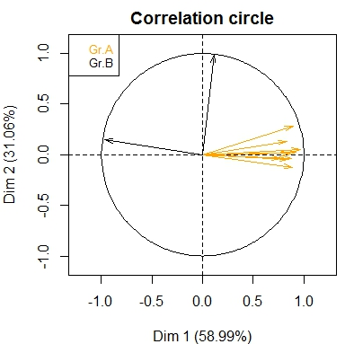
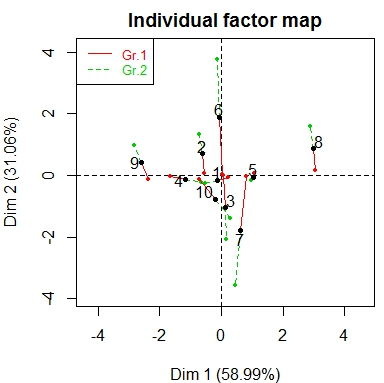
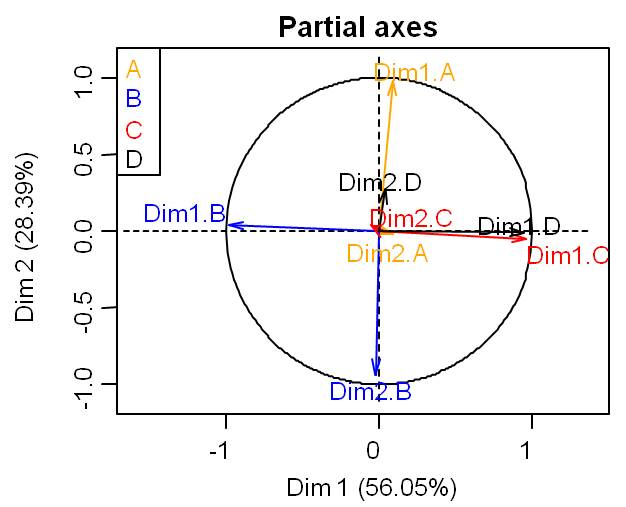

Site F. Husson
Pour toutes les questions, cocher la ou les affirmations vraies.
Q1) On construit une AFM avec 5 groupes de variables; dans le graphe de représentation des groupes un groupe peut avoir une coordonnée très proche de 1 sur la 1ère et sur la 2ème dimension un groupe peut avoir une coordonnée très proche de 0 sur la 1ère et sur la 2ème dimension si un groupe a une coordonnée égale à 1 sur la 1ère dimension, alors la 1ère dimension de ce groupe coïncide avec la 1ère dimension de l'AFM si deux groupes ont des coordonnées proches de 0 sur les axes 1 et 2, alors ils induisent nécessairement la même structure sur les individus si deux groupes ont des coordonnées identiques sur toutes les dimensions, alors ils induisent nécessairement la même structure sur les individus
Q2) On a construit une AFM sur un tableau contenant 3 groupes de variables. Les matrices suivantes donnent les coefficients Lg puis RV entre les groupes ainsi que les coefficients entre chaque groupe et la configuration de l'AFM.  le groupe A est un groupe de variables unidimensionnel (les corrélations entre toutes les variables de ce groupe sont égales à 1 ou -1) les variables du groupe A sont très peu corrélées aux variables du groupe C le groupe B est le groupe le plus multidimensionnel le groupe B induit la structure sur les individus la plus proche de la configuration fournie par l'AFM
Q3) Points partiels (on note i^j le point partiel de l'individu i vu par les variables du groupe j) si tous les points partiels de l'individu i sont superposés sur le plan 1-2 de l'AFM alors ils sont superposés au point moyen de l'individu i si un individu a tous ses points partiels superposés alors les valeurs centrées-réduites prises par l'individu sont les mêmes d'un groupe à l'autre si les valeurs prises par les individus i et k sont exactement les mêmes pour les variables du groupe 1 alors les points partiels i^1 et k^1 coïncident si les points partiels d'un individu sont très dispersés, alors cet individu est décrit de façon homogène par tous les groupes
Q4) On a construit une AFM sur un tableau de données contenant deux groupes de variables. Le graphe des groupes, le graphe des variables et le graphe des individus partiels sont donnés ci-dessous.    Retrouver quels sont les groupes qui coïncident d'un graphe à l'autre. Gr.Z - Gr.A - Gr.1 Gr.Z - Gr.A - Gr.2 Gr.Z - Gr.B - Gr.1 Gr.Z - Gr.B - Gr.2
Q5) Axes partiels On a réalisé l'analyse factorielle multiple sur un tableau constitué de 4 groupes de variables. On a construit le graphe des axes partiels et représentés les deux premiers axes des ACP de chaque groupe.  dans l'ACP sur les seules variables du groupe A, les coordonnées des individus sur la 1ère dimension sont très corrélées avec les coordonnées des individus sur la 1ère dimension de l'AFM dans l'ACP sur les seules variables du groupe A, les coordonnées des individus sur la 1ère dimension sont très corrélées avec les coordonnées des individus sur la 2ème dimension de l'AFM le plan 1-2 de l'ACP sur les variables du groupe B donne une configuration des individus similaires à celle fournie par le plan 1-2 de l'AFM (dans le sens où les individus proches, resp. éloignés, sur un plan d'ACP sont aussi sur le plan d'AFM) dans l'ACP sur les seules variables du groupe C, les coordonnées des individus sur la 1ère dimension sont très corrélées avec les coordonnées des individus sur la 1ère dimension de l'AFM les coordonnées des individus sur la 1ère dimension de l'ACP du groupe C sont très corrélées avec les coordonnées des individus sur la 1ère dimension de l'ACP du groupe D
Score = Réponses correctes :